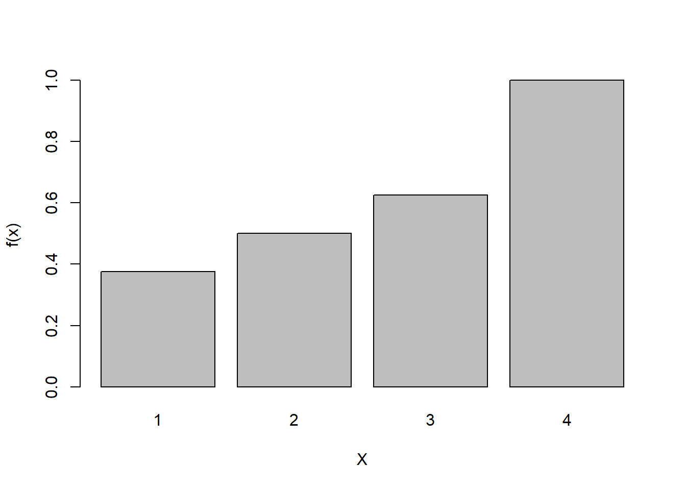

library(palmerpenguins)Lab 2: Probability Distributions
Graded Out of 35 Points
We will again be using our Palmer Penguins data today for some problems, so let’s load that package in now:
1. Working With Probability Distributions
Problem 1.1 (5 Points)
Let \(X\) be a discrete random variable whose PDF is described in the table given here:
| \(X\) | 1 | 2 | 3 | 4 |
|---|---|---|---|---|
| \(f(X)\) | 3/8 | 1/8 | 1/8 | 3/8 |
Do the following (show work, 1 point each):
Calculate \(E[X]\)
\(\sum_{Sx} xp(x)\)
\((1\cdot\frac{3}{8}) + (2\cdot\frac{1}{8})+(3\cdot\frac{1}{8})+(4\cdot\frac{3}{8})\)
\[\boxed{2.5}\]
Calculate \(Var(X)\)
\(\sum_{Sx} x^2p(x)-(\sum_{Sx} xp(x))^2\)
\(((1^2\cdot\frac{3}{8}) + (22\cdot\frac{1}{8})+(32\cdot\frac{1}{8})+(42\cdot\frac{3}{8}))-2.52\)
\[ \boxed{1.75} \]
Plot \(f(x)\). To make a barplot, use the
barplotfunction.fx <- c(3/8,1/8,1/8,3/8) X <- c(1,2,3,4) # realized I do not need this: prob1C.table <- data.frame(fx,X) barplot(fx, xlab="X", ylab="f(x)", names.arg = c("1","2","3","4"), ylim = c(0,1))Plot \(F(x)\). To make a barplot, use the
barplotfunction.Fx <- c(3/8,((3/8)+(1/8)),((3/8)+(1/8)+(1/8)),((3/8)+(1/8)+(1/8)+(3/8))) # realized I do not need this: prob1D.table <- data.frame(Fx,X) barplot(Fx, xlab = "X", ylab = "f(x)", names.arg = c("1","2","3","4"))
Calculate \(P(X \geq 4)\)
\(\text{4 is the only possible outcome $\le$ 4 in the set}\)
\(P(4) = \frac{3}{8}\)
\[ \boxed{\frac{3}{8}} \]
Problem 1.2 (5 Points)
Some background: The exponential distribution is the continuous analog of the geometric distribution, which is discrete. Consider a geometric random variable \(X\) with parameter prob=0.5 and an exponential random variable \(Y\) with parameter rate=0.5. Note that R has a standard naming scheme for functions in which PDFs are named “d” + (distribution suffix) and CDFs are named “p” + (distribution suffix). The distribution suffix for the geometric distribution is geom (e.g., dbiom), and for the exponential is exp (e.g. dexp). There is a trick in this question; think carefully!
- (2 Points) Plot the PDF for \(X\) and \(Y\) across a range from 0 to 10. One plot should be a barplot and the other a scatter plot with lines; part of the question is figuring out which variable matches which style of plot. Some tips:
- To generate a vector of evenly spaced values over a set interval, try the
seqfunction. - If if
vis a vector with the values you want to evaluate between 0 and 10, then you can generate a vector with all the corresponding probabilities viadgeom(x=v, prob=0.5)and analogously for the exponential. - To make a line plot, use the
plotfunction with the optiontype="l"
- To generate a vector of evenly spaced values over a set interval, try the
support0_10 <- c(seq(0,10))
XPDF <- function(x,p){
((1-p)^x)*p
}
barplot(XPDF(support0_10,0.5), ylab = "probability density", xlab = "x", main = "PDF for X")YPDF <- function(y,l){
l*(exp(1)^(-l*y))
}
plot(YPDF(support0_10,0.5), type = "l", ylab = "probability density", xlab = "y", main = "PDF for Y")- (2 Points) Calculate the probability that \(X=5\) and the probability that \(Y=5\)
XPDF(5,0.5)[1] 0.015625
Solution to 1.2B
P(X = 5) = 0.015625
P(Y = 5) = 0, because the probability that a random variable equals an exact number over a continuous interval is equal to 0
- (1 Points) Calculate the probability that \(5<X \leq 6\) and the probability that that \(5 < Y \leq 6\). Hint: Use the CDF for this.
pgeom(support0_10[7], prob=0.5) - pgeom(support0_10[6], prob=0.5)[1] 0.0078125pexp(support0_10[7], rate=0.5) - pexp(support0_10[6], rate=0.5)[1] 0.03229793
Solution to 1.2C
$ P(5<X) = $
$ P(5<Y)= $
2. Knowing Your Distributions
Problem 2.1 (5 Points)
For each of the following situations, propose a probability distribution that would suit the situation and justify your selection (1 point each).
We are interested in simulating the number of aphids per leaf on a tomato plant. For each leaf, there will be a discrete number of aphids, with no strict upper limit.
Poisson
Number of aphids –> discrete
Fixed interval of space (per leaf) –> Poisson
We are interested in simulating the time it takes a vulture to locate it’s next meal. Assume most vultures find a meal rather quickly, but some will take a very (arbitrarily) long time.
Exponential
Time –> continuous
Amount of time it takes before a “success” (ie. meal located) –> Exponential
We have collected 100 moths from the environment that may belong to one of two different color morphs (light and dark). We are interested in simulating the number of light moths collected in this sample.
Binomial
Two discrete categories
Counting the number of one of two binary options –> Binomial
We are in the field, again sampling a species of moth that may belong to one of two color morphs (light or dark). We are interested in simulating whether or not an individual moth sampled will be from the dark color morph.
Bernoulli
Two discrete options
Counting one outcome out of two binary possibilities –> Bernoulli
We are interested in simulating the average number of leaves per tree in a forest across many different forests in the Northeast US.
Normal
Average number of leaves –> continuous
Distribution of characteristic with additive effects –> Normal
Problem 2.2 (10 Points)
For each of the following, if necessary identify the probability distribution you are using and justify your choice, then answer the question showing your work.
(2 Points) What is the probability that a predator will capture it’s first prey item after six failed attempts given that it’s probability of capturing prey per attempt is 0.3?
$ (1-p)^xp $
$ P( (1-0.3)^{6} $
$ = $
(2 Points) If new members of a species immigrate into a defined patch of habitat at a constant rate of 0.5 per day, what is the expected wait time until the next new arrival?
$ = }$
$ = $
(2 Points) For the example above (B), what is the expected number of arrivals over a one-week period?
Poisson
$0.5\cdot7\text{ days}=\boxed{3.5}$
(3 Points) We randomly selected 100 White Ash trees from a forest in upstate NY. For the area we are interested in, we know that from previous surveys about 30% of trees are infested by Emerald Ash Borers (assume a 0.3 probability that any given tree is infested). Use R to plot the pdf of the number of infested trees in your sample. Discuss (briefly!) the limitations of our approach for modeling this probability - how might the assumptions of our model be violated?
This approach assumes that cases of infection are independent. However, in a real-world case it is possible that trees can spread disease to one another (ie. the infection of one tree leads directly to the infection of a tree in its proximity).
whiteashtrees <- seq(0,100, by = 1) plot(dbinom(whiteashtrees, 100, 0.3), ylim = c(0,.3), ylab = "Probability of Infection", xlab = "Sample", main = "PDF of 100 White Ash Trees with Parameter p = 0.3")(1 Point) We are studying a forest where tree heights are normally distributed with a mean height of 10 meters and a variance of 4 meters. What percent of trees do we expect to fall within a height range of 6-14 meters?
2.2E95% of samples in a normal distribution are within +- 2 standard deviations from the mean. Therefore, 95% of trees would be between 6 and 14 meters (10 +- 4 meters).
3. Checking for Normality with Quantile-Quantile Plots
Problem 3.1 (5 Points)
3.1
The Q-Q plot does not fit the trendline very well (especially at small and large values), which does not support that the data is exactly normally distributed.
lnormal_qqplot <- function(data, x){
ldata <- log(data)
qqnorm(ldata, main = x)
qqline(ldata)
}
lnormal_qqplot(data = penguins$body_mass_g, "Q-Q Body Mass")Problem 3.2 (5 Points)
a_penguins <- subset(penguins, penguins$species=="Adelie")
cs_penguins <- subset(penguins, penguins$species=="Chinstrap")
g_penguins <- subset(penguins, penguins$species=="Gentoo")
par(mfrow=c(1,3))
lnormal_qqplot(a_penguins$body_mass_g, "Adelie Penguin Body Mass")
lnormal_qqplot(cs_penguins$body_mass_g, "Chinstrap Penguin Body Mass")
lnormal_qqplot(g_penguins$body_mass_g, "Gentu Penguin Body Mass")female_penguins <- subset(penguins, sex == "female")
male_penguins <- subset(penguins, sex == "male")
par(mfrow=c(1,2))
lnormal_qqplot(female_penguins$body_mass_g, "Female Penguins Body Mass")
lnormal_qqplot(male_penguins$body_mass_g, "Male Penguins Body Mass")
female_a_penguins <- subset(a_penguins, sex == "female")
male_a_penguins <- subset(a_penguins, sex == "male")
female_cs_penguins <- subset(cs_penguins, sex == "female")
male_cs_penguins <- subset(cs_penguins, sex == "male")
female_g_penguins <- subset(g_penguins, sex == "female")
male_g_penguins <- subset(g_penguins, sex == "male")
par(mfrow=c(2,3))
lnormal_qqplot(female_a_penguins$body_mass_g,"Female Adelie Penguins Body Mass")
lnormal_qqplot(male_a_penguins$body_mass_g,"Male Adelie Penguins Body Mass")
lnormal_qqplot(female_cs_penguins$body_mass_g, "Female Chinstrap Penguins Body Mass")
lnormal_qqplot(male_cs_penguins$body_mass_g,"Male Chinstrap Penguins Body Mass")
lnormal_qqplot(female_g_penguins$body_mass_g, "Female Gentu Penguins Body Mass")
lnormal_qqplot(male_g_penguins$body_mass_g, "Male Gentu Penguins Body Mass")5. List of All Problems (Above, 35 Points)
1.1(5 Points)
1.2 (5 Points)
2.1 (5 Points)
2.2 (10 Points)
3.1 (5 Points)
3.2 (5 Points)
6. Acknowledgements
Problem 1.2 adapted from problem sets shared by Dr. Philip L.F. Johnson. Problem 1.1 adapted from problem sets shared by Dr. Heather Lynch.